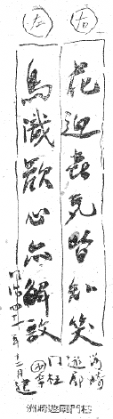
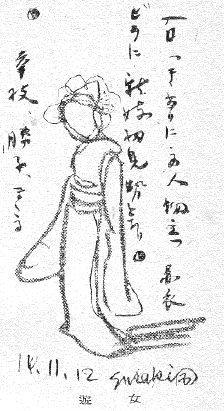
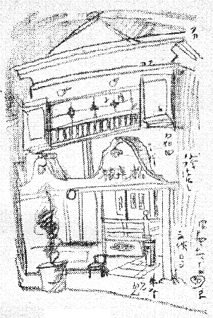
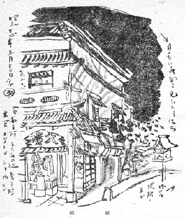

東京の中は何処も大抵知つてゐるつもりでゐたけれども、燈台もと暗し、洲崎をろくに知らずにゐたことを最近になつて気が付いた。その洲崎へ行つて見て初めて、こんな特殊なところを、今まで殆んど知らずにゐたかと、迂遠に心付いたわけだ。
――尤も洲崎の概念なり地形等々は子供の頃から聞きおぼえてよく知つてゐる。洲崎と云へば津浪、大八幡楼、広重の絵の十万坪（名所江戸百景の内）と、よく知つてゐる。写生画では小林清親や井上安治の木版画でその昔の有様をとうからなじみだし……却つてその為めに、今日まで実体は知らずにゐても気に留めずにゐたものだらう。地域のせゐでアヴァンテュールには縁無く過ぎた土地だ。
二三日前八丁堀まで写生の用があつて行つた序でに、そろそろ日の暮れ方であつたが、思ひ立つて洲崎まで足をのばして見た。そして車を「こゝが遊廓の入口だ」といふところで下りて見ると、相当幅の広い橋があつて、俄然としてその先きの行手に娼家の一劃が展ける。通りの真中に打渡したコンクリートの道幅が大層広く、その両側の、娼家の造りをした家並みが、また大層低く比較的暗い。そのくせ惻々として町全体に物憂いやうな、打つちやりはなしたやうな、無言のエロティシズムが充満してゐる。それが吉原や新宿あたりのやうにぱつとしたものでないだけ――丁度空も暗くどんよりとした日の、この町にはそれが誂へ向きのバックだらう――一層陰々として真実めいた色街の景色だつた。
これが第一印象だつたのである。
洲崎の大門であらう。別に門の体裁は成してゐないけれども、とに角大門と称し得る標識塔がそこに左右一対に建つてゐて、鋳物であるが古風な、先づその右手の塔の表面に浮彫の文字がかなりの大字で「花迎喜気皆知笑」としてある。いふまでもなく左手の方とつゞいて一聯を成すものに違ひない。道路をわたつて左手へ行つて見ると果して、「鳥識歓心無解歌」としてあつた。裏面を見ると「明治四十一年十二月建」と打出してある。

洲崎遊廓門柱
夜目で審さにはわからなかつたし、格別にも注意しなかつたが、とに角これは明治のカナモノ細工の一つで、その末期のものとはいつても、今となれば存外そのアラベスクなぞも時代の風味のある少数の遺存物に当るだらう。
――それよりもぼくは、この洲崎のカナモノを見ると同時に、同じものでも吉原の大門の明治味感を直ぐさま思ひ出してゐた。震災の当時たれだつたか名のきこえた人が真先きにあの破片をかつぎ出した（？）とか聞いたし、近頃の消息ではまた、残片を時節がらツブシに出したとも聞いたやうだ。これは元来ちやんとアーチ形の「門」になつてゐたもので、作も却々良く、龍宮の乙姫様がアーチの弓形の真中に立つて夜空に電球を捧げてゐたのをおぼえてゐる。これは文献で見ると明治十四年の作とあるもので、
「総て鉄にして永瀬正吉氏の作に係る。両柱に左の一聯を鋳出せり。
春夢正濃満街桜雲
秋信先通両行燈影
是ぞ福地桜痴居士が当時豪奢の名残りと聞えし。」（明治四十一年版「吉原名所図絵」東陽堂）秋信先通両行燈影
洲崎のものは何れこの模倣に相違ないものである。吉原のカナモノ細工ならば、さういふ庶民美術品の一つの代表として伝はる価値のあつたものである。洲崎の標識塔も、震災前あたりはあれで矢張りアーチ形をしてゐた。今あるのは、その一部かも知れない。
ぼくが昔、家人から聞いたところに依れば、東京も川を向うへ渡れば別世界で、遊廓も洲崎は東京をかまはれた東京者の行くところである。従つて気風が荒く、娼妓などもそれに相応した渡り者が陣取つてゐて、往々にして雇人の方が主人よりも鼻息があらい、と。
しかしそれは「昔」の東京又は洲崎のことであらう。今は「東京」も「洲崎」も変つたから全然話が別と思はれる。――それにしても、何処かに昔なりのぞんきな、また伝法な気風はあるものか、ぼくがつい先夜の一二の発見にしても、それが吉原・新宿・品川・玉の井……何処とも違つたキメの粗い古風な感じの有つたのは、とある曲り角で、しやぐまに結つた真紅な装束の女が帯しろはだかでいきなりばたばた横町から往来へ出たのに出逢つたことや、ある小店の玄関先を見るともなく見ると、そこに五六人の娼妓がたむろして、あるひは髪をかき上げてゐる、一人は立つて桃色の着ものの前を大きく引つぱつて振りながら合せてゐる。その他、ゴチヤゴチヤしてゐる有様が、とんと、国芳の絵本かなんぞを見るやうであつた。

遊女
この廓内は通りが正確に碁盤目をしながら、大抵の通りのその行き止りまで行くと、卒然としてあたりがつぼむやうに暗くなり、高い一丈ほどもありさうな黒塀などが立つてゐる。また大抵は行き止りにコンクリートの広いゆるい段が出来て、その先きが目かくしの、忍び返しなどつけた頑固な板塀になつてゐる。段を登つて塀のすき間から向うをのぞくと、光り一つ見えず、そこはどんよりした遠い水面らしいのである。
いかさま、昔この向うの島に囚人がゐたころに、その時分深川は吉原の仮宅があつたといふが、仮宅の騒ぎが、水に乗つて先づ太鼓がきこえて来る。それにかぶせて浮いた三味の音が囚人達の耳に伝はる。囚人がそんな時やみにまぎれ牢脱けをして水を渡る芝居などが作られてゐる。――そのころのどんよりした水面も今夜と全く同じものだつたらう。
洲崎といふところは一体、
「洲崎遊廓は洲崎弁天町の全域を有し、別に一廓を成し、新吉原に擬したるものにして海に臨むを以てその風景は却つて勝れりとす……洲崎橋を渡りて廓内に入れば直接の大路ありて海岸に達す。左右両畔に桜樹を植ゑ、新吉原の一時仮植せるものに異り、春花爛漫の節には香雲深く鎖して一刻千金の夢を護す。この花折るべからずの標札は平凡なれども此処に在りては面白く覚え、海岸の防波堤は石垣とコンクリートを以て築きたるものにして明治三十一年五月成、監督東京府技手恩田岳造と固くしるしあり。天然の風浪はこれを以て容易に防ぎ得るべし、色海滔々の情波は遂に防ぐべからず。」
「青楼綺閣縦横に連り、遊客の登るに任す。その中最も大なるは八幡楼（大八幡といふ）にて構前に庭あり。蟠松に松竹等を配して風趣を添へたるが如き新吉原に見ざる所なり。その他新八幡楼、甲子楼、本金楼等は廓中屈指のものなり。夜着の袖より安房上総を望み得る奇景に至つては、実に東京市中に在りては本遊廓の特色なり。」
かういふ工合に書かれたところで、この文章は明治四十二年発行の「新撰東京名所」（第六十四号東陽堂版）から引用したものだ。余程今からは年代の隔たる文献だから、娼家の名などは到底このまゝではゐまい。しかし同じ本の「洲崎弁天町、町名の起源並に沿革」に誌されるところは今もそのまゝ通用する筈だ。それに依ると、
「洲崎弁天町は五万坪ありてもとは海中なりしが之れを埋築し、明治二十年功成りて深川区に編入し、近隣に旧洲崎弁天の社あるを以て町名とし、同二十一年九月、一丁目二丁目に分ち、遊廓と為したり。」

松喜楼
して見れば、一立斎広重が死の直前（安政自三辰至五午年）に作つた江戸百景にこれを「洲崎十万坪」として一望荒涼とした地域を空から大鷲の舞ひ下るすさまじい風景に表現したのも、肯かれる。井上安治の洲崎は――安田雷洲の洲崎なども同じやうな図柄の――前景に長い川添ひの堤防があつて、草地となり、これが埋立地とおぼしく、はるかに神社の屋根が兀然と高く見えるのは洲崎弁天に相違ないものである。
恐らく安治の風景は、明治二十五年以前に写されたこの土地の点景だつたに違ひない。
ぼくはその日（十一月三日夜）俄かに洲崎へ足を踏み入れたといつても、別段用事も目的もあるわけではないから、昭和十四年極く気散じに、足の向くまにまに廓内をぶらぶらして見た。主な大通りは非常に幅広いが、他の十字路は大抵六間幅だ。
何しろこの遊廓の印象は何処も彼もヘンに森閑として薄暗く陰気でゐて、そのくせぬるい湯がわくやうに、町のシンは沸々と色めいてゐる。――ちよつと東京市内では他に似た感じの求めにくいものである。ぼくの乏しい連想でこれに似た感じのところは、京都の島原。それから強ひていへば、阿波の徳島の遊廓、三浦三崎の遊廓。さういふものに似てゐる。市街地からエロティシズムだけ隔離して場末の箱に入れた感じだ。色気が八方ふさがりの一劃に封じ込まれた為め、町が内訌してゐる塩梅だらう。
昔の芝神明の境内の花街だとか池の端あたりは、矢張り暗いむすやうな中に極く色つぽいものだつたが、四通八達のなかに在るので、空気の通るものがあつた。濁つてゐず澄んでゐた。
断つておくが、洲崎の印象はその時ぼくの受取つた極く素直な客観であつて、微塵も主観ではないといふことである。平たくいへば、ぼくは一向その時色気を兆してゐないのに、町全体、家々に、自づから色気があつて、それが感じられるといふ意味。――
すると、飛躍して人が色つぽくならうが為めには、新宿や吉原等の職業地よりも、洲崎は当時絶好のコンディションに置かれてゐたものかもしれないと思ふ。――しかしさう思ふそばから直ぐとこれを否定にかゝる客観にいつはれないものゝあるのは、何とも寂しいこと、沈んでゐること、滅してゐることである。こゝの娼家の何れかの窓から廓外一円の暗い水でも見たならば、エロティシズム以外に、一種のニヒリズムが必ず起るだらう。これは好ましい状態でない。

娼家
遠音の新内流しなどといふものは、今でも聞きどころによると、昔のイキの美感を回想し、微弱ながらも、それを揺りさますことのあるものだ。しかし洲崎の蘭燈影暗い二階座敷かなんかで、新内流しを聞けば、却つてこれは里心を付け、逆効果になるだらうと思ふ。まして支那そばのラッパなどを聞けば魂ごと寒くなりさうである。
はつきりいへば、洲崎は東京の中の「一つのヰナカだ」と考へて、終始辻つまが合ふやうに思はれた。――このぼくの独断が間違はなければ、ことわざに、京にゐなかありといふ通り、かういふ特殊区域が今時都心をさう離れない場所に、比較的のんびりと遺存するのは面白いモードである。